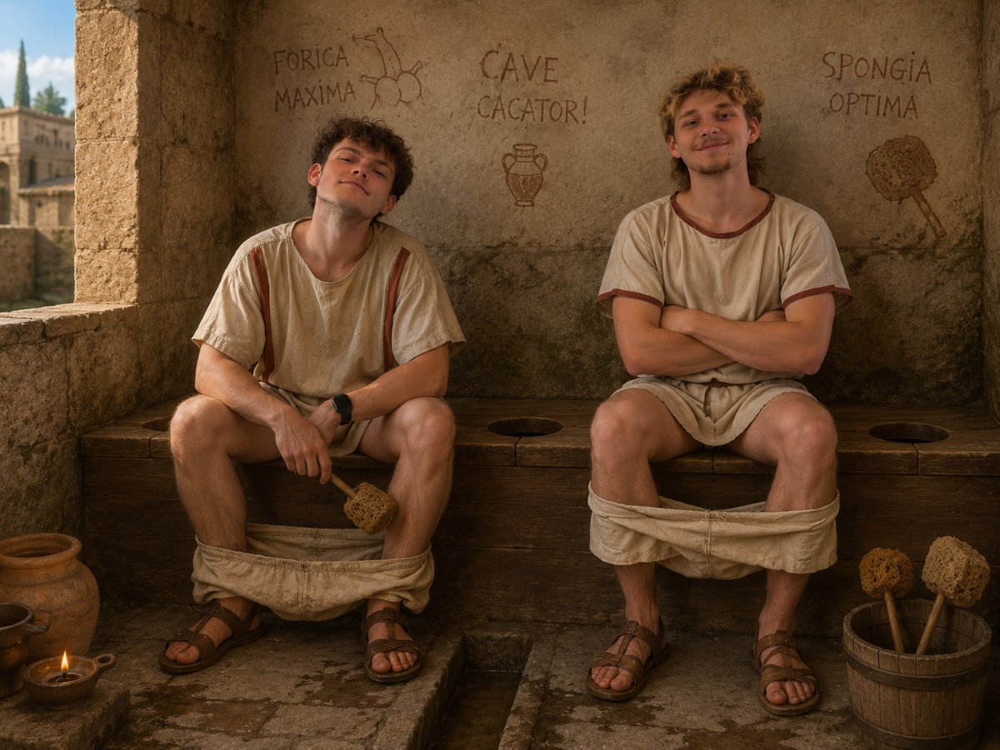

Vývoj ve starověku
První známé toalety vznikly již před více než 4 000 lety. Jednou z nejvyspělejších civilizací v oblasti hygieny byla civilizace v údolí řeky Indus, která budovala domy s jednoduchými toaletami napojenými na kanalizaci.
Velkého pokroku dosáhli také starověcí Římané. Ve městech budovali veřejné latríny, které byly napojeny na rozsáhlé kanalizační systémy. Lidé zde seděli vedle sebe bez jakéhokoli soukromí a společně diskutovali o běžných tématech.
Římané využívali tekoucí vodu k odplavování odpadu, což bylo na svou dobu velmi pokročilé řešení. Jejich kanalizační systém, známý jako Cloaca Maxima, patří mezi nejvýznamnější technické stavby starověku.
Přestože hygienické standardy byly jiné než dnes, starověké civilizace položily základy moderní sanitace.
